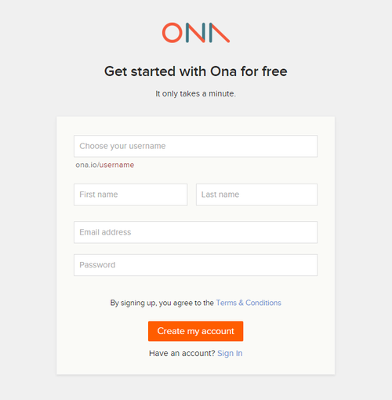
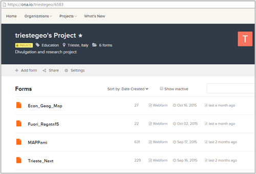
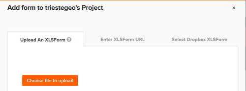
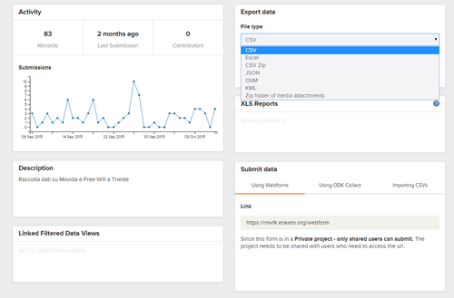
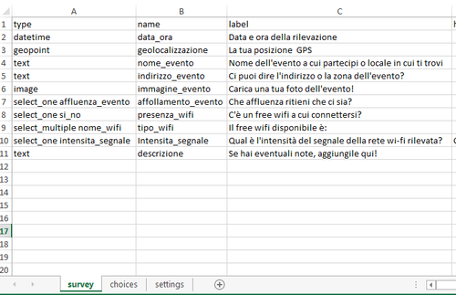
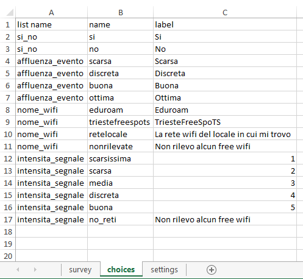
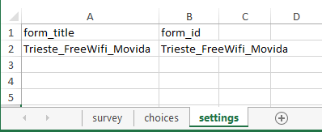
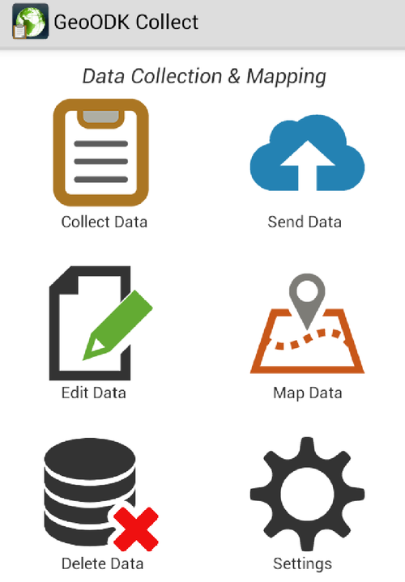
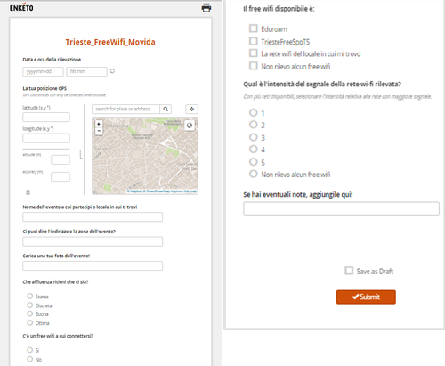

NdR: questa è la seconda parte del post pubblicato qui.
Impostazione lato server: ona.io
Giuseppe: Proponiamo di partire da qui, dal “lato server”, dal momento che è la prima cosa che si va a vedere perché bisogna registrarsi: https://ona.io/join

Una volta registrati, si può impostare un nuovo progetto e scegliere il livello di ‘privacy’. La pagina iniziale è la seguente (con il nome che avete scelto al posto di triestegeo, ovviamente).

Dal sito alla voce ‘add form’ è possibile caricare il questionario/form impostato come file XLS, che nelle righe sotto vi spieghiamo come preparare.
Le ‘form’ saranno i questionari e la scheda di acquisizione dati, che successivamente verrà visualizzata sul vostro smartphone o tablet.

Sarà possibile preparare più progetti e specificare il livello di ‘privacy‘, ovvero se progetto ‘pubblico’ o ‘privato’. Ona.io consente diverse possibilità: nel caso di un profilo ‘pubblico’ non vi sono fee da pagare, mentre per alcuni profili privati o con più restrizioni all’utilizzo, è prevista una quota da versare.
Il ‘lato server’ sarà il ‘contenitore’ dei dati, il luogo dove questi saranno conservati una volta caricati, e dove sarà possibile effettuare delle operazioni, quali visualizzazione tabulare o sotto forma di mappa, dove sarà possibile caricare eventuali file multimediali (come ad esempio immagini o video registrati) nonché dei report sulle attività (es. delle statistiche sulle acquisizioni di dati, ecc.) e scaricare i dati in vari formati una volta raccolti.

Dal ‘lato server’ è possibile anche accedere alla WebForm, ovvero dalla finestra (su pagina web) da cui caricare i dati (qualora non si disponga di un dispositivo mobile adatto).
Ovviamente il passaggio necessario, prima di tutto ciò, è l’impostazione del questionario o form, ovvero il ‘cuore’ di tutto il sistema di raccolta dati!
Impostazione del questionario/form con un file Excel
Viola: la form contenente il questionario da caricare sul server per cominciare la raccolta è un file Excel (quindi con estensione .xls) che deve essere formato obbligatoriamente da due fogli di lavoro, denominati ‘survey’ e ‘choices’, cui si può affiancare a discrezione dell’utente un ulteriore foglio di lavoro rinominato ‘settings’. Nel foglio ‘survey‘ c’è la griglia di domande e informazioni da raccogliere, impostate in ordine ben preciso. Sono presenti varie colonne, di cui le principali (ed obbligatorie) sono:
- Type
- Name
- Label
In ‘type’ si individua il tipo di inserimento (output) richiesto all’utente che compila la form relativa ad ogni domanda: testo, orario, numeri interi, coordinate, selezionare una o più opzioni da una scelta di risposte, coordinate GPS, immagini, audio, video e così via.
| Nel foglio di lavoro rinominato “survey”.Possibili tipologie di output richiesti all’utente da specificare nella colonna ‘type’ | |
| Text | Testo |
| Integer | Numeri interi |
| Decimal | Numeri decimali |
| select_one [nome della lista di possibili risposte, che si esplicitano nel secondo foglio]es. select_one affluenza_evento | Per le domande a risposta multipla, dove è possibile selezionare solo una riposta |
| select_multiple seguito dal nome della lista di possibili risposte che si esplicitano nel secondo foglio]es. select_multiple nome_wifi | Per le domande a risposta multipla dove si consente di selezionare varie risposte |
| Note | È un campo che non ha bisogno di input da parte dell’utente, è una schermata normalmente utilizzata all’inizio o alla fine della survey per presentare il questionario o per ringraziare l’utente per l’inserimento |
| Geopoint | Rileva le coordinate GPS |
| Geotrace | Rileva le coordinate di una polinea |
| Geoshape | Rileva le coordinate di un poligono |
| Image | Si chiede all’utente di caricare o scattare una foto |
| Barcode | Permette di leggere un codice a barre qualora sia installata sul telefono una applicazione in grado di leggere il codice. |
| Date | Rileva la data in automatico |
| Datetime | Permette di rilevare data e ora della compilazione del questionario in automatico |
| Audio | Si può registrare un audio |
| Video | Si richiede di fare un video o caricarlo dalla galleria |
| Calculate | Permette di fare un calcolo |
Nella colonna ‘name‘ si inserisce un nome con cui poter identificare la singola domanda, specificata poi per esteso come si vuole venga visualizzata nella compilazione del questionario colonna ‘label’. I dati verranno visualizzati con questo nome identificativo quando li si andrà a sfogliare dal sito internet.
Qualora si vogliano porre domande con risposte già preimpostate, è necessario inserire “select_one” se l’utente ha la possibilità di selezionare solo una risposta, oppure “select_multiple” se può sceglierne più di una, seguito dal ‘nome’ che identifica il gruppo di domande. Nel nostro caso si era deciso di avere informazioni sull’affluenza all’evento o nel locale di riferimento, con possibilità di scegliere tra ottima, buona, discreta o scarsa, e per quanto riguarda la presenza di free wifi si poteva di selezionare tra le due reti pubbliche, Eduroam e TriesteFreeSpots, oppure la presenza di una rete aperta del locale in cui ci si trova.
Spesso le immagini valgono più di mille parole e quindi guardate un po’ come abbiamo impostato noi il primo foglio di lavoro.

Il campo ‘type’ per inserire il ‘datetime’ o solo ‘time’ o ‘date’ per permettere di capire gli orari e le date in cui si compila il questionario è molto comodo perchè questa informazione viene rilevata in maniera automatica.
Nel momento in cui si inserisce ‘geopoint’ per rilevare la propria posizione GPS, l’operazione può richiedere anche un paio di minuti (all’inizio) per essere abbastanza accurata, è normale. Se avete fretta, potete attendere che il fumetto vi dia indicazioni sulla precisione della rilevazione, cliccare su Registra Localizzazione e continuare a compilare il modulo fino a salvarlo; poi l’applicazione permette di modificare in seguito la posizione semplicemente spostando un puntino sulla mappa andando su “Edit data”.
È possibile anche impostare delle domande concatenate con una delle domande precedenti, ma questa funzione è stata assimilata solo dopo. Esempio: nel nostro caso era possibile fare le domande in riga 9 e 10 di specificazione su nome e copertura wi-fi solo se prima l’utente aveva selezionato ‘si’ alla domanda in riga 8, che richiedeva di dire se c’era un free wi-fi nelle vicinanze. Bisognava allora inserire una colonna denominata ‘Relevant’ accanto a ‘Label’ in corrispondenza di tali righe con campo ${si_no} = ‘si’, dove $ sta per ‘selected’ seguito tra parentesi graffe il nome della lista di risposte relative alla domanda (nel nostro caso si_no) seguito da un simbolo di “uguale” (‘=’) e dalla risposta tra apici singoli (”).
Nel secondo foglio di lavoro vanno inserite le griglie di risposte possibili alle varie domande a risposta multipla: il link con il primo foglio è dato dal nome della lista delle risposte inserito nella colonna ‘type’ dopo la dicitura select_one (oppure multiple), che viene ripetuto nel secondo foglio in prima colonna, chiamata ‘list name’.
È utile anche perché è possibile così evitare di riscrivere opzioni di risposta inserite già in altre liste, potendo riferirsi alla stessa: il più semplice esempio è dato dalle risposte come “si” o “no”. Se la lista di risposte si chiama si_no, è possibile inserire due domande del tipo select_one [si_no], con nome ed etichetta diverse, scrivendole nel foglio choices una volta sola.

A questo punto, se si vuole è possibile aggiungere un altro foglio denominato ‘settings‘, dove inserire due colonna, ‘form_title’ e ‘form ID’, tramite cui è possibile denominare il questionario: in assenza il questionario avrà lo stesso nome dato al file xls che verrà caricato sul sito.

‘Lato applicazione mobile’: GeoODK Collect e WebForm
Giuseppe: Il terzo componente del sistema è quello ‘mobile‘, ovvero relativo alla raccolta vera e propria dei dati.
Una volta scaricata l’applicazione GeoODK Collect, ricordiamoci che è solo nel Play Store, la schermata iniziale è la seguente.

Per partire con la raccolta bisogna modificare le impostazioni preimpostate e caricare la form che ormai abbiamo già messo sul server. E’ necessario innanzitutto premere l’icona delle impostazioni (Settings) e poi General Settings, selezionare ‘altro server’, modificando l’URL preesistente con il server utilizzato per caricare i dati sul web, https://ona.io/nome_progetto/.
Tornando nelle impostazioni precedenti è necessario poi cliccare su ‘form management’, dove compariranno tutte le form create dal proprio account nel server e selezionare quella che ci interessa. Dopo aver premuto “prendi selezionato” e aver dato l’invio cliccando su “ok”, si ha in memoria la form “vuota” e si possono raccogliere i dati andando sull’icona ‘collect data’ e selezionando la form appena scaricata.
La app dà la possibilità di fare una serie di operazioni: modificare i dati delle form già compilati e salvati (edit data), spostare la posizione dei rilevamenti qualora non fossero abbastanza accurati, eliminare form (delete data) e, infine, inviare i dati al server (send data). Quest’ultima operazione è quella che ‘vuota’ dei dati il nostro dispositivo mobile: ricordiamo, infatti, che l’iniziativa ODK nasce per scopi ‘sociali’ e umanitari, ed è pensata pertanto per raccogliere dati anche in assenza di una copertura di rete, con pertanto la possibilità di inviare i dati soltanto una volta in cui questa sia resa disponibile.
Viola: Gli stessi dati possono essere raccolti anche tramite una webform, ovvero una pagina web dove sono riportate i medesimi quesiti della form, solo organizati ovviamente con un layout diverso. Perché usare questo strumento anziché l’app? per 3 motivi:
- Per i pigri che non vogliono installare l’app ma operare da browser;
- Per i possessori di dispositivi non-Android (Windows Phone e iPhone)
- Più semplicemente per chi ha magari acquisito dei dati ‘su carta’ e vuole ‘buttarli dentro’ a una banca dati comodamente seduto alla scrivania.
Attenzione che però non tutti i browser funzionano bene! Se vi interessa acquisire immagini, video o audio ci sono alcune limitazioni: serve il browser Chrome, se poi avete un iOS potete averle solo tramite un browser che si chiama Puffin! Comunque la rilevazione di tutti gli altri campi sarà possibile 

Giuseppe: Se siete curiosi di provare GeoODK e a inserire qualche dato, provate con il progetto ‘Trieste Free Wifi Movida’! Si è concentrato sulla città di Trieste e per ora è terminato (Viola ha finito la tesi di laurea magistrale, e quello era l’oggetto della ricerca!), però potete provare a inserire dei dati sul wifi e sull’affollamento dei locali nella vostra città (magari mandateci un’email così mostriamo qualche elaborazione!). Potete farlo tramite la webform su Enketo qui sotto:Anche in questo caso è possibile sia inviare i dati immediatamente (‘submit‘ a fine acquisizione) o rimandare in un secondo tempo (e selezionare ‘save as draft‘).
https://rmvfk.enketo.org/webform
Oppure, dopo essersi installati GeoODK, andare su “Settings”, sotto “General Settings” scegliere il server “Altro” e inserire https://ona.io/triestegeo.
Su “Form Management” (sempre sotto ‘settings’) selezionare la form “Trieste_FreeWiFi_Movida”
A questo punto è possibile raccogliere dati e inserirli nel database creato per questa form (ovviamente la procedura sarà la medesima quando avrete creato il vostro progetto in Ona e caricato una o più form)!
La nostra Viola ha preparato anche un video su Youtube con una panoramica su come impostare la form su GeoODK e iniziare ad acquisire i dati! https://www.youtube.com/watch?v=EP2PA5ysyEk
Altre applicazioni
Viola: Questa applicazione è stata utilizzata anche per raccogliere dati sull’affluenza a due eventi cittadini, TriesteNext (weekend dedito alla divulgazione scientifica e dimostrazioni nell’ambito accademico organizzati dall’Università di Trieste) e FuoriRegata (serie di eventi lato terra che si svolgono la settimana precedente alla Barcolana). Con uno stand di ‘geografi’ capeggiati dal qui presente Giuseppe, sempre a Trieste Next 2015, abbiamo poi presentato due attività permesse dalla customizzazione di questa applicazione: una per ‘mappare’ la provenienza dei visitatori a Trieste Next e un’altra per la mappatura delle zone problematiche legate all’accessibilità e alle barriere architettoniche della città di Trieste.
Appena pronti vi segnaleremo i collegamenti ai lavori che sono stati realizzati su questi progetti!
Conclusioni – altri sviluppi
Per i nostri progetti di mobile data collection abbiamo scelto la base di Open Data Kit per strutturare il sistema di raccolta dati, accompagnato all’app per dispositivo mobile GeoODK. In realtà GeoODK non è l’unica app che lavora in questo sistema. ODK Collect e Kobo sono due app che si basano sulla medesima architettura per la raccolta dei dati, consentendo anche la gestione di dati geolocalizzati.
(https://play.google.com/store/apps/details?id=org.odk.collect.android&hl=it; https://play.google.com/store/apps/details?id=org.koboc.collect.android&hl=it)
L’unico problema in questi due esempi è dato dal fatto che solo dati puntuali possono essere acquisiti durante una ‘campagna’ e possono essere visualizzati e modificati solo dopo averli scaricati su server.
Nel caso di GeoODK invece funzioni di visualizzazione e di editing dei dati possono essere fatte già da dispositivo mobile prima di caricarli sul server.
Un altro elemento importante, che tuttavia stiamo appena testando, è dato dal fatto che GeoODK consente di acquisire dati anche sotto forma di polilinea o poligono, oltre che punti (v. sopra il riferimento alle funzioni Geopoint, Geotrace e Geoshape). In questo caso, tuttavia, al momento le soluzioni lato server come ona.io non supportano la gestione di tale dato, per cui si rende necessario installare localmente ODK Aggregate, ovvero il server di aggregazione dei dati da dispositivo mobile. Siamo in fase ‘work in progress’ anche noi, speriamo di riuscire a testare anche questa soluzione! 
Per qualsiasi approfondimento non esitate a contattarci! Saremo felici di rispondere e approfondire gli argomenti!
Nasco geografo economico, mi interesso di Geographic Information e di Smart Cities. Attratto dalle tecnologie ICT e dall’innovazione, ma sempre con l’uomo al centro. Professore di Economic Geogrphy, GIS e Geografia delle Reti. Presidente del Comitato Scientifico dell’Associazione Italiana di Cartografia. Nel tempo libero, poco, running o MTB
Fresca fresca di laurea magistrale in Scienze Aziendali, ho scoperto “all’ultimo minuto” una passione per Smart Cities, GIS e Citizen science, di cui ho scritto per il lavoro di tesi. Sono fermamente convinta che non esistano Smart Cities senza Smart Citizens e che la tecnologia sia un mezzo e non un fine per migliorare le città.

{kind=link}